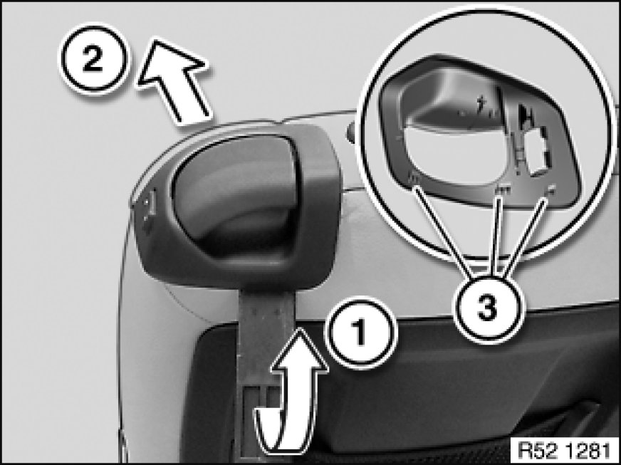
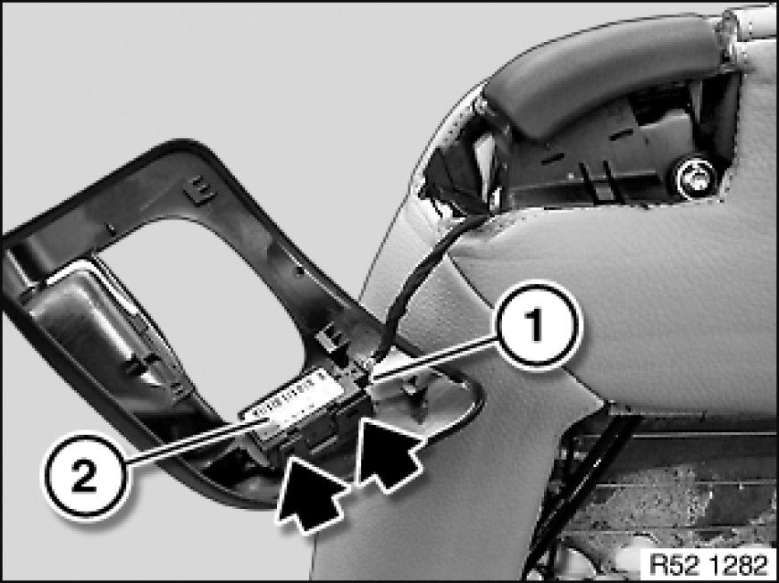
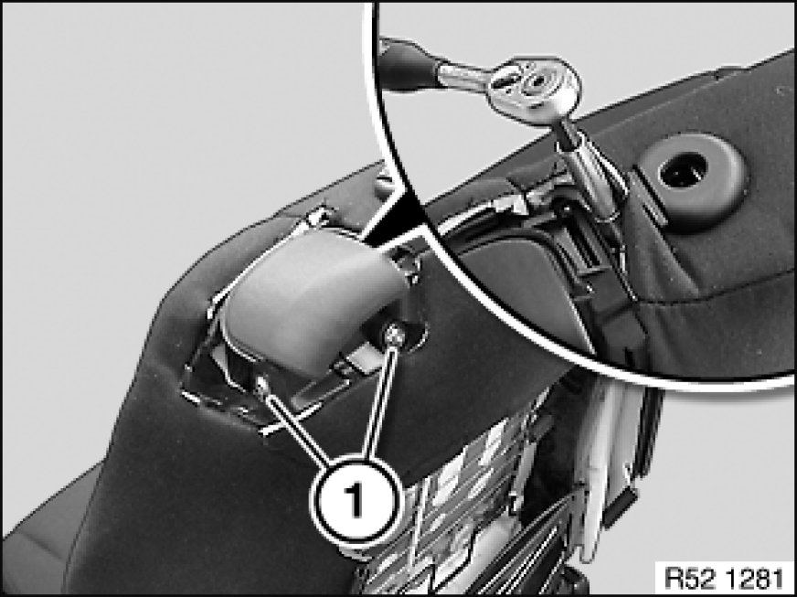
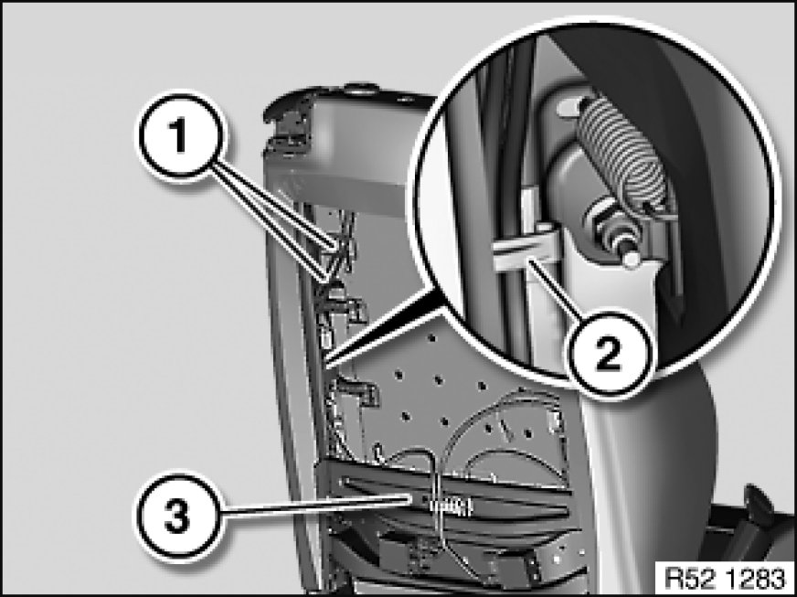
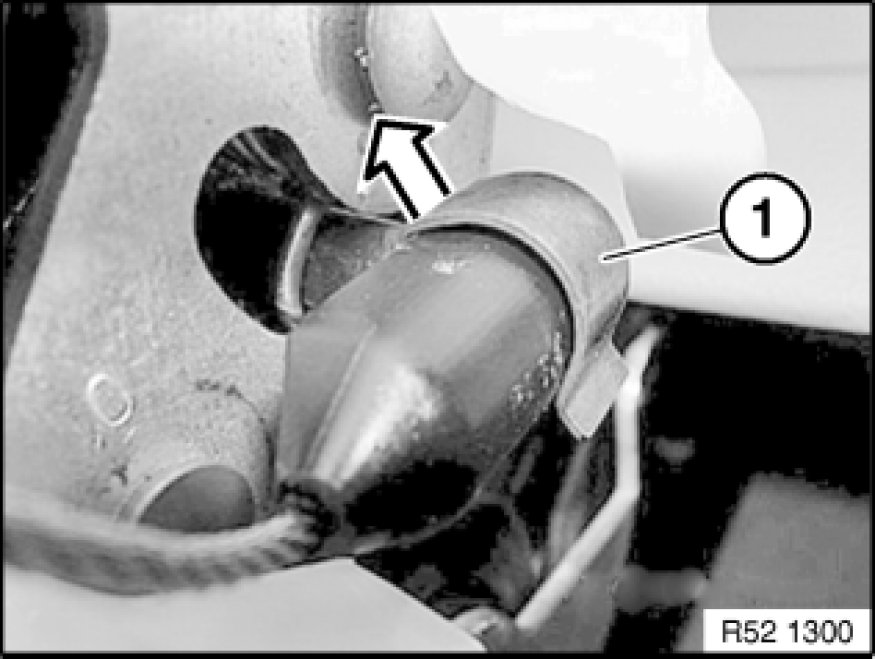
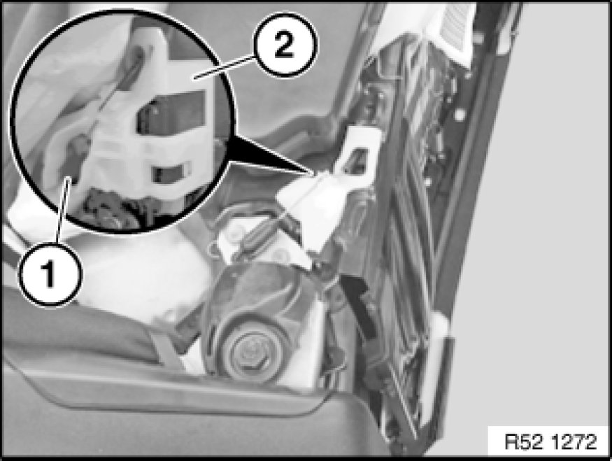

Removing and Installing/Replacing Release Mechanism on Left or Right Front Seat
52 13 034 - Removing and installing/replacing release mechanism on left or right front seat (normal/manual)

Necessary preliminary tasks:
- Remove front seat Removing and Installing Left or Right Front Seat (Normal / Manual)
- Remove rear panel Removing and Installing/Replacing Rear Panel on Left or Right Front Seat Backrest

Lever out trim in upward direction (1) with plastic wedge.
Slide trim forwards (2) and feed out over release handle.
Installation:
Check tabs (3) for correct seating in release mechanism.
Clip trim noticeably into place.

Front seat (electric) only:
Unfasten plug connection (1) and disconnect.
Replacement only:
Unclip switch (2).

Detach backrest cover in marked area.

Important!
Danger of mixing up screws.
Release screws (1).
Release screw between backrest cover and release mechanism.

Feed Bowden cables (1) out of cable holder (2).
Unclip cable holder (3) from backrest frame.

Unhook seat covers on left and right.
Lever out retaining clip (1) on left and right.
Installation:
Replace retaining clip (1).
Make sure retaining clip (1) is correctly seated.

Unclip ball socket (1) from ball head on left and right.
Installation:
Ball socket (1) must snap audibly into place.
Ball socket (1) must be able to move freely on ball head.
Feed Bowden cable out of guide (2) and backrest frame.